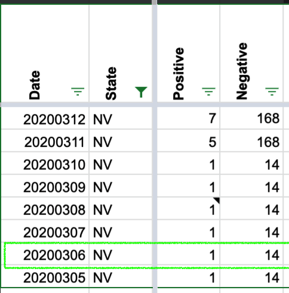
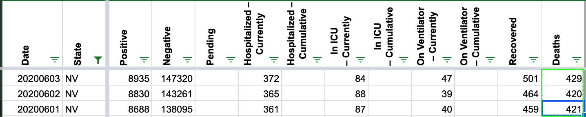
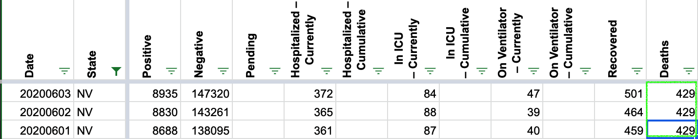

[NV Historicals Error]
Two errors in your NV data.
First, there’s a random 50 that appears where there should be a 1 in the cumulative positive cases… taking your daily.csv file and pulling out the NV data, see these rows:
… 20200305 NV 1 20200306 NV 50 20200307 NV 1 …
Second, there is a cumulative death error where an error seems to have slipped in, then was subsequently corrected, but this wasn’t back-corrected in the cumulative totals.
Here are the deaths for NV around June 1st. Note the 421 DOWN to 420 error… … 417 2020-05-30T10:30:00Z 417 2020-05-31T11:30:00Z 421 2020-06-01T11:00:00Z 420 2020-06-01T00:00:00Z
Hey Michal, Thank you for writing. We’ve updated the data for cumulative positive cases for March 6, 2020.
BEFORE:
AFTER: 
We have also updated the data for cumulative deaths for June 1 and June 2, 2020 as reported by the Nevada Health Response team on June 4. BEFORE: 
AFTER: 